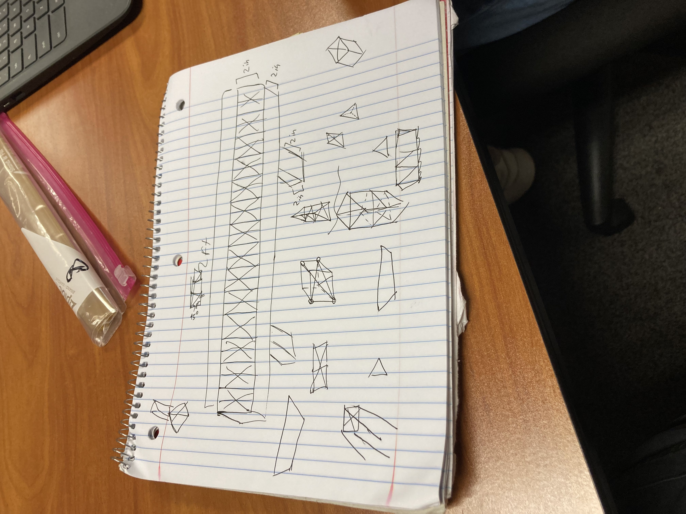

9/2/22 1st blog
I learned how to use tinkercad.
I'm working on making the goldberg machine in tinkercad.
A goldberg machine is a machine that uses chain reactions.
You should always have protective goggles, masks, and other protective gear in the workshop.
You should also never bring food in the workshop.
I had fun making a washing machine in tinkercad.
9/8/22 2nd blog
Finished goldberg machine in tinkercad.
We are still working on our group project for the goldberg machine.
I'm having fun contributing to our group goldberg machine.
9/16/22 3rd blog
We finished cutting out the cardboard and made a structure for the
goldberg machine. I had fun having the ship competition.
9/21/22 4th blog We finished the goldberg machine it popped the balloon.
We completed the project and I feel kind of acomplished from doing that.
Anyway its finished.
9/30/22 5th blog I built a lizard's prosthetic leg on tinkercad.
It was easy.
10/7/22 6th blog I dissected a laptop it was pretty confusing because
most of the parts were missing and the cpu was broken and fell out,so it wasn't our fault.
We finished coloring and labeling the components of the laptop.
The challange was finding how many doors there were and I think our numbers
around 5000 doors. It was fun roaming out of class and estimating how many doors there are at school.
I learned Ram stands for Random access memory. To me I think the cpu is one of the most important
components of a laptop because it is basically the brain of the computer.
10/14/22 7th blog
I learned that drag, thrust, lift, and gravity influences how an aircraft flies.
The drag slows the aircraft down. The thrust determines the direction of flight. The lift allows the airplane to go up.
The gravity is the force that pulls the plane down.
On tinkercad we are working on our bottle rocket design.
We haven't completed that much.
The airplane thing was fun.
10/24/22 8th blog
we finished our bottle rocket design and it was fun.
we finished our design on tinkercad. when we launched our rocket
with coke and mentos it didn't launch, but when we used pressurized
water, it worked a lot better. we finished the bom. WHen we launched our rocket
it was fun and intense.
Pdf
11/4/22 9th blog
We built a water filter with cotton balls, sand, pebbles, and larger
rocks. It was fun and our water was pretty clean. We learned about V=IR,
V/R=I,and R=V/I. R stands for resistance ohm, I stands for current ampere, and
V stands for volts. I made bread circuits too.
11/10/22 10th blog made a tinkercad for the bread circuit and know
how to to place the resistors and leds on the bread board.I also
did breadboarding and we had trouble at first, but we completed the
project. For challange day we decided that we would rather do math class
than count up to a 1,000,000.
challange
11/18/22 11thblog
We figured how to plug the lights in and how to code and it was fun
and the coding was easy.We learned how to get rid of bromate
in the reservoir and it was pretty fun. We learned how to make the lights
go off and on in a pattern.I'm thinking of getting Cod black ops2 and
playing it all throughout break. Some of our other relatives are
coming.
carcinogen
12/2/22 12th blog
We worked on designing our spaghetti bridge. We caded our design to get
exact measurements. Now we are working on gluing it. I think it is really
fun and interesting final idea.

12/14/22 13th blog
We finished most of our spaghetti bridge. We finished one bridge and we
are almost done for the other one. I learned that I suck at building roads.
Our group failed to get a spot on the board, but it was fun. We tested our
spaghetti bridge we had a weight of 18.4 grams and we had a score of 25
grams.
12/16/22 14th blog
We completed our presentation. Our 2nd bridge broke because one side
was too heavy.
Spaghetti Bridge Presentation
1/13/23 15th blog
We completed are slides and decided to go into the gaming industry and designed
new vr game controllers. During winter break I went to camp. Relatives
came to our house and we had a party. I did rope climbing and went hiking.
I had a good time during Winter break.
company
1/19/23 16th blog I learned about negotiating for a certain part of
a company and that I will always choose royalties when negotiating because
I will always get the set amount no matter if they tank, so it is pretty
safe. I had fun making our presentation. I had fun making offers to
other companies. We had fun choosing the offers while we were presenting
I think we chose the best offer.
1/27/23 17th blog
We learned about non newtonian fluid and how they don't follow
newton's law of viscosity. The fluid we made was firm when touched
but is still like a liquid. We made it and it was fun. It is made of corn starch and
water. we are making the document and we are working on the biography.
It is still a work in progress.
The house of card is 9.7inches.


 10/14/22 7th blog
I learned that drag, thrust, lift, and gravity influences how an aircraft flies.
The drag slows the aircraft down. The thrust determines the direction of flight. The lift allows the airplane to go up.
The gravity is the force that pulls the plane down.
On tinkercad we are working on our bottle rocket design.
We haven't completed that much.
The airplane thing was fun.
10/14/22 7th blog
I learned that drag, thrust, lift, and gravity influences how an aircraft flies.
The drag slows the aircraft down. The thrust determines the direction of flight. The lift allows the airplane to go up.
The gravity is the force that pulls the plane down.
On tinkercad we are working on our bottle rocket design.
We haven't completed that much.
The airplane thing was fun.


 12/14/22 13th blog
We finished most of our spaghetti bridge. We finished one bridge and we
are almost done for the other one. I learned that I suck at building roads.
Our group failed to get a spot on the board, but it was fun. We tested our
spaghetti bridge we had a weight of 18.4 grams and we had a score of 25
grams.
12/14/22 13th blog
We finished most of our spaghetti bridge. We finished one bridge and we
are almost done for the other one. I learned that I suck at building roads.
Our group failed to get a spot on the board, but it was fun. We tested our
spaghetti bridge we had a weight of 18.4 grams and we had a score of 25
grams.


 12/16/22 14th blog
We completed our presentation. Our 2nd bridge broke because one side
was too heavy.
12/16/22 14th blog
We completed our presentation. Our 2nd bridge broke because one side
was too heavy.